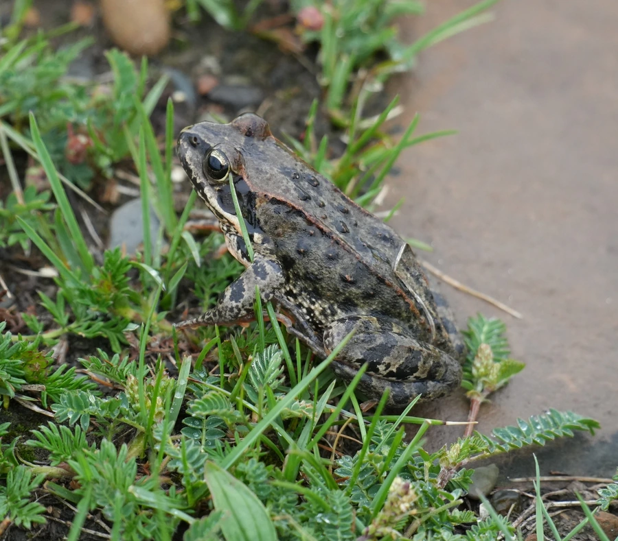

两栖动物 · 动物界
高原林蛙 Rana kukunoris

生活在青藏高原高寒草甸的蛙类，耐寒能力强，冬季在冻土下的水洼中越冬，夏季在高原湖泊边繁殖。
- 分类
- 门脊索动物门纲两栖纲目无尾目科蛙科属林蛙属
- 栖息环境
- 海拔 2000–4500 米的高寒草甸、沼泽与湖泊边缘
- 地理分布
- 中国青藏高原及周边高山区
- 保护级别
- IUCN 无危（LC）；中国“三有”保护动物
物种志
高原林蛙体长 5–7 厘米，头部钝圆，背部呈黄褐色、灰褐色或橄榄色，散布不规则的深色斑点，背侧褶明显，后肢较长，趾间蹼发达。雌蛙腹部常带橙黄色，雄蛙前肢拇指有婚垫。
它是青藏高原的特有蛙类，栖息于海拔 2000–4500 米的高寒草甸、沼泽、湖泊和溪流附近，以蚊、蝇、甲虫等昆虫为食。高原冬季漫长，它能在冻土层下的水洼或泥洞中越冬，耐受低温；繁殖期在 4–6 月，冰雪融化后雄蛙聚集在浅水处鸣叫，雌蛙产卵数百粒，蝌蚪在短暂的高原夏季快速生长变态。高原林蛙是高原湿地生态链的重要一环，也是研究动物低温适应的对象。
形态与习性
- 食性蚊、蝇、甲虫等昆虫
- 体长约 5–7 cm
- 越冬在冻土层下的水洼或泥洞中越冬
- 繁殖4–6 月冰雪融化后产卵，每次数百粒
- 活动节律白天活动，繁殖期雄蛙聚集鸣叫
- 垂直分布海拔 2000–4500 米
趣味知识
- 高原林蛙能在冻土层下的水洼中越冬，耐寒能力很强。
- 冰雪刚融化，雄蛙就聚集在浅水处鸣叫求偶。
- 蝌蚪必须在短暂的高原夏季完成变态，否则难以越冬。